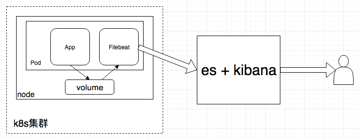

<!DOCTYPE html>
<html>
  <head>
    <meta charset="utf-8">
    <meta http-equiv="X-UA-Compatible" content="IE=edge">
    <meta name="viewport" content="width=device-width, initial-scale=1, maximum-scale=1">
    
    <meta name="theme-color" content="#33363b">
    <meta name="msapplication-TileColor" content="#33363b">
    
    
    
    <meta name="keywords" content="Blog, Computer Science, Hexo">
    
    
    <link rel="apple-touch-icon" sizes="180x180" href="/favicons/apple-touch-icon.png">
    
    
    <link rel="icon" type="image/png" sizes="192x192" href="/favicons/android-chrome-192x192.png">
    
    
    <link rel="icon" type="image/png" sizes="32x32" href="/favicons/favicon-32x32.png">
    
    
    <link rel="icon" type="image/png" sizes="16x16" href="/favicons/favicon-16x16.png">
    
    
    <link rel="mask-icon" href="/favicons/safari-pinned-tab.svg" color="#33363b">
    
    
    <link rel="manifest" href="/favicons/site.webmanifest">
    
    
    <meta name="msapplication-config" content="/favicons/browserconfig.xml">
    
    
    <link rel="alternate" href="/atom.xml" title="Xuntian" type="application/atom+xml" />
    
    
    <link rel="shortcut icon" type="image/x-icon" href="/images/favicon.ico">
    
    
    <link rel="stylesheet" type="text/css" href="/css/normalize.css">
    <link rel="stylesheet" type="text/css" href="/css/index.css">
    
    <link rel="stylesheet" type="text/css" href="/css/sidebar.css">
    
    
<link rel="stylesheet" type="text/css" href="/css/page.css">
<link rel="stylesheet" type="text/css" href="/css/post.css">

    <link rel="stylesheet" type="text/css" href="/css/custom.css">
    <link rel="stylesheet" type="text/css" href="/css/solarized-dark.css">
    <link rel="stylesheet" type="text/css" href="/css/lightgallery.min.css">
    <script type="text/javascript" src="/js/jquery.min.js"></script>
    <script defer type="text/javascript" src="/js/util.js"></script>
    <script defer type="text/javascript" src="/js/scrollspy.js"></script>
    <script defer type="text/javascript" src="/js/fontawesome-all.min.js"></script>
    <script defer type="text/javascript" src="/js/lightgallery.min.js"></script>
    <script defer type="text/javascript" src="/js/lg-fullscreen.min.js"></script>
    <script defer type="text/javascript" src="/js/lg-hash.min.js"></script>
    <script defer type="text/javascript" src="/js/lg-pager.min.js"></script>
    <script defer type="text/javascript" src="/js/lg-thumbnail.min.js"></script>
    <script defer type="text/javascript" src="/js/lg-zoom.min.js"></script>
    
    
    <script defer type="text/javascript" src="/js/search.js"></script>
    <script type="text/javascript">
    $(document).ready(function () {
      var searchPath = "search.xml";
      if (searchPath.length === 0) {
        searchPath = "search.xml";
      }
      var path = "/" + searchPath;
      searchFunc(path, "search-input", "search-result");
    });
    </script>
    
    
    <script defer type="text/javascript" src="/js/index.js"></script>
    
    <script defer type="text/javascript" src="/js/custom.js"></script>
    <title>App Logs in K8s Cluster | Xuntian - Lizhiqiang's blog</title>
  </head>
  <body itemscope itemtype="http://schema.org/WebPage" lang="en"  data-spy="scroll" data-target=".list-group">
    
<header id="header" class="header" style="background: #33363b;">
  <div class="container">
    <div class="header-container">
      <div class="header-title">
        <h1 class="title"><a href="/">Xuntian</a></h1>
        <h2 class="subtitle">Lizhiqiang's blog</h2>
      </div>
      
      <div class="logo">
        
      </div>
      
    </div>
    
<nav id="nav" class="nav">
  <a id="nav-toggle" class="nav-toggle"><i class="fas fa-bars"></i></a>
  <ul id="menu">
    
    <li><a href="/">Home</a></li>
    
    <li><a href="/archives/">Archives</a></li>
    
    <li><a href="/categories/">Categories</a></li>
    
    <li><a href="/tags/">Tags</a></li>
    
    <li><a href="/about/">About</a></li>
    
  </ul>
</nav>


  </div>
</header>


    <main id="main" class="main">
      <div class="container">
        <div class="main-container">
          <div class="content">
            
<div id="post" class="post">
  
  <article class="post-article card" itemscope itemtype="http://schema.org/Article">
    <div class="post-block">
      <link itemprop="mainEntityOfPage" href="http://www.lizq.top/2018/09/12/CS/Kubernetes/elk/">
      <span hidden itemprop="author" itemscope itemtype="http://schema.org/Person">
       <meta itemprop="name" content="LiZhiqiang">
       <meta itemprop="description" content="Computer enthusiasts">
       <meta itemprop="image" content="/images/github.jpg">
      </span>
      <span hidden itemprop="publisher" itemscope itemtype="http://schema.org/Organization">
       <meta itemprop="name" content="Xuntian">
      </span>
    </div>
    <header class="post-header">
      <h1 class="post-title" itemprop="name headline">App Logs in K8s Cluster</h1>
      <div class="post-meta">
        
        <span class="post-date">
          <i class="far fa-calendar-plus"></i><span><time title="post-date" itemprop="dateCreated datePublished" datetime="2018-09-12T00:00:00+08:00">2018-09-12</time></span>
          <!--
          <i class="far fa-calendar-plus"></i><span><time title="post-date" itemprop="dateCreated datePublished" datetime="2018-09-12T00:00:00+08:00">2018-09-12 00:00:00</time></span>
          -->
        </span>
        
        
        
        <span class="post-meta-divider divider">|</span>
        
        <span class="post-categories">
          
          <i class="far fa-folder-open"></i><span itemprop="about" itemscope itemtype="http://schema.org/Thing"><a href="/categories/CS/" itemprop="url" rel="index"><span itemprop="name">CS</span></a></span><i class="fas fa-angle-right"></i><span itemprop="about" itemscope itemtype="http://schema.org/Thing"><a href="/categories/CS/k8s/" itemprop="url" rel="index"><span itemprop="name">k8s</span></a></span><i class="fas fa-angle-right"></i><span itemprop="about" itemscope itemtype="http://schema.org/Thing"><a href="/categories/CS/k8s/log/" itemprop="url" rel="index"><span itemprop="name">log</span></a></span>
        </span>
        
        
      </div>
    </header>
    <main class="post-main" itemprop="articleBody">
      <p>近期实践了在k8s集群内对各个应用的日志处理，起因是开发那边反应服务器环境调试的时候查看日志特别麻烦，毕竟在开发本地毫无问题的代码在服务器上没有bug的概率还是比较低的。之前也有上elastic技术栈的计划，但是做得并没有那么完善。    </p>
<h3 id="介绍"><a href="#介绍" class="headerlink" title="介绍"></a>介绍</h3><p>在k8s集群中，可以将日志简单得分为三类：节点级别日志、集群级别日志和运行在集群内的应用日志，这里仅仅实践了集群内的应用日志。<br>elastic技术栈的大致架构为： app —&gt; filebeat（fluenetd,logstash） —&gt; elasticsearch —&gt; kibana<br>在CICD流程中自动化部署的服务上线后，日志收集工具实时监听应用的日志信息，并将日志推送到elasticsearch，开发就可以在kibana上搜索到日志，考虑到logstash过于庞大，则用轻量级的filebeat替代     </p>
<a id="more"></a>
<p></p>
<p>一般说来，收集应用日志有以下三种做法：</p>
<ol>
<li>在集群中每个节点运行一个filebeat的pod，因为运行在节点上的容器会将控制台的标准输出保存在/var/lib/docker/containers目录下，因此只需将该目录以volume的形式挂载在日志收集组件的pod里</li>
<li>在每个应用的pod里加一个filebeat容器，用volume把应用容器里的日志文件共享到filebeat容器里</li>
<li>在每个应用的容器里加一个filebeat服务，直接本地读取日志文件</li>
</ol>
<p>第一种做法最简单便捷，实验下来发现读取到的日志有遗漏，而且有一些无关的日志，于是我采取的是第二种做法</p>
<h3 id="实验要点"><a href="#实验要点" class="headerlink" title="实验要点"></a>实验要点</h3><blockquote>
<p>制作filebeat的docker镜像<br><figure class="hljs highlight dockerfile"><table><tr><td class="gutter"><pre><span class="line">1</span><br><span class="line">2</span><br><span class="line">3</span><br><span class="line">4</span><br><span class="line">5</span><br><span class="line">6</span><br><span class="line">7</span><br><span class="line">8</span><br><span class="line">9</span><br><span class="line">10</span><br><span class="line">11</span><br><span class="line">12</span><br><span class="line">13</span><br></pre></td><td class="code"><pre><span class="line"><span class="keyword">FROM</span> debian:jessie</span><br><span class="line"></span><br><span class="line"><span class="keyword">RUN</span><span class="bash"> mkdir /opt/filebeat</span></span><br><span class="line"><span class="bash">WORKDIR /opt/filebeat</span></span><br><span class="line"><span class="bash">RUN apt update -y &amp;&amp; apt install -y wget &amp;&amp; \  </span></span><br><span class="line"><span class="bash">  wget https://artifacts.elastic.co/downloads/beats/filebeat/filebeat-6.4.0-linux-x86_64.tar.gz -O filebeat-6.4.0-linux-x86_64.tar.gz &amp;&amp; tar zxvf filebeat-6.4.0-linux-x86_64.tar.gz &amp;&amp; \  </span></span><br><span class="line"><span class="bash">  rm -rf filebeat-6.4.0-linux-x86_64.tar.gz &amp;&amp; \  </span></span><br><span class="line"><span class="bash">  apt-get purge -y wget &amp;&amp; \</span></span><br><span class="line"><span class="bash">  apt-get autoremove -y &amp;&amp; \</span></span><br><span class="line"><span class="bash">  apt-get clean &amp;&amp; rm -rf /var/lib/apt/lists/* /tmp/* /var/tmp/*</span></span><br><span class="line"><span class="bash">RUN mv ./filebeat-6.4.0-linux-x86_64/* ./ &amp;&amp; mv filebeat /usr/<span class="built_in">local</span>/bin/</span></span><br><span class="line"><span class="bash">COPY filebeat.yml /opt/filebeat/filebeat.yml</span></span><br><span class="line"><span class="bash">CMD filebeat</span></span><br></pre></td></tr></table></figure></p>
</blockquote>
<blockquote>
<p>部署pod<br><figure class="hljs highlight less"><table><tr><td class="gutter"><pre><span class="line">1</span><br><span class="line">2</span><br><span class="line">3</span><br><span class="line">4</span><br><span class="line">5</span><br><span class="line">6</span><br><span class="line">7</span><br><span class="line">8</span><br><span class="line">9</span><br><span class="line">10</span><br><span class="line">11</span><br><span class="line">12</span><br><span class="line">13</span><br><span class="line">14</span><br><span class="line">15</span><br><span class="line">16</span><br><span class="line">17</span><br><span class="line">18</span><br><span class="line">19</span><br><span class="line">20</span><br><span class="line">21</span><br></pre></td><td class="code"><pre><span class="line"><span class="attribute">apiVersion</span>: v1</span><br><span class="line"><span class="attribute">kind</span>: Pod</span><br><span class="line"><span class="attribute">metadata</span>:</span><br><span class="line">  <span class="attribute">name</span>: test-logstash</span><br><span class="line"><span class="attribute">spec</span>:</span><br><span class="line">  <span class="attribute">containers</span>:</span><br><span class="line">  - <span class="attribute">name</span>: egg-example</span><br><span class="line">    <span class="attribute">image</span>: <span class="number">10.28</span>.<span class="number">18.13</span>/xuntian/egg-example</span><br><span class="line">    <span class="attribute">imagePullPolicy</span>: IfNotPresent</span><br><span class="line">    <span class="attribute">volumeMounts</span>:</span><br><span class="line">    - <span class="attribute">name</span>: app-logs</span><br><span class="line">      <span class="attribute">mountPath</span>: /root</span><br><span class="line">  - <span class="attribute">name</span>: filebeat</span><br><span class="line">    <span class="attribute">image</span>: <span class="number">10.28</span>.<span class="number">18.13</span>/xuntian/<span class="attribute">filebeat</span>:<span class="number">6.4</span></span><br><span class="line">    <span class="attribute">imagePullPolicy</span>: IfNotPresent</span><br><span class="line">    <span class="attribute">volumeMounts</span>:</span><br><span class="line">    - <span class="attribute">name</span>: app-logs</span><br><span class="line">      <span class="attribute">mountPath</span>: /root</span><br><span class="line">  <span class="attribute">volumes</span>:</span><br><span class="line">  - <span class="attribute">name</span>: app-logs</span><br><span class="line">    <span class="attribute">emptyDir</span>: &#123;&#125;</span><br></pre></td></tr></table></figure></p>
</blockquote>
<p>简单地用egg.js写了一些测试接口，打包成docker镜像，部署时加上filebeat的容器，监听egg-example项目的日志，最终可以看到egg-example项目的日志被完整地读取并写入es中。</p>

    </main>
    <footer class="post-footer">
      
      <div class="post-tags">
        
        
        
        
        <a class="post-tag button" href="/tags/k8s/" style="background: #fc6423;" rel="tag"><i class="fas fa-tags"></i>k8s</a>
        
        <a class="post-tag button" href="/tags/log/" style="background: #a3bb54;" rel="tag"><i class="fas fa-tags"></i>log</a>
        
        <a class="post-tag button" href="/tags/elk/" style="background: #47aaff;" rel="tag"><i class="fas fa-tags"></i>elk</a>
        
      </div>
      
    </footer>
  </article>
  
  
  <div class="post-nav">
    <div class="post-nav-next post-nav-item">
      
      <a href="/2018/08/05/CS/Hackintosh/黑苹果/" rel="next" title="关于黑苹果的一些建议"><i class="fas fa-angle-left"></i><span class="nav-title">关于黑苹果的一些建议</span></a>
      
    </div>
    <div class="post-nav-prev post-nav-item">
      
      <a href="/2018/10/03/EM/心态/大觉归真/" rel="prev" title="大觉归真"><span class="nav-title">大觉归真</span><i class="fas fa-angle-right"></i></a>
      
    </div>
  </div>
  
  
</div>

          </div>
          
          
          
<aside class="sidebar" id="sidebar" style="background: url(/images/sidebar_background.png);">
  
  <div class="search">
    <div class="form-group">
      <i class="fas fa-search"></i><input type="search" id="search-input" name="q" results="0" placeholder="Search" class="form-control"/>
    </div>
  </div>
  <div class="search-result-box" id="search-result"></div>
  
  
<div class="info sidebar-item" id="info">
  
  
  
  <h1 class="author-name">LiZhiqiang</h1>
  <h2 class="author-description"> Computer enthusiasts</h2>
  <div class="site-count">
    
    <div class="archives-count">
      <div class="site-count-title">Archives</div>
      <div><a href="/archives/">24</a></div>
    </div>
    
    
    
    <span class="site-count-divider divider">|</span>
    
    <div class="categories-count">
      <div class="site-count-title">Categories</div>
      <div><a href="/categories/">17</a></div>
    </div>
    
    
    
    <span class="site-count-divider divider">|</span>
    
    <div class="tags-count">
      <div class="site-count-title">Tags</div>
      <div><a href="/tags/">24</a></div>
    </div>
    
  </div>
  
  <div class="rss">
    <a class="rss-link button sidebar-item" href="/atom.xml"><i class="fas fa-rss"></i>RSS</a>
  </div>
  
</div>


  <div class="sidebar-sticky">
    
    


<hr>
<div class="post-toc sidebar-item" id="toc-div">
  <div><i class="fas fa-list-ol"></i>Table of Contents</div>
  <div class="post-toc-content"><ol class="list-group toc"><li class="toc-item toc-level-3"><a class="list-group-item toc-link" href="#介绍"><span class="toc-text">介绍</span></a></li><li class="toc-item toc-level-3"><a class="list-group-item toc-link" href="#实验要点"><span class="toc-text">实验要点</span></a></li></ol></div>
</div>


    
    
    
<hr>
<div class="social-link sidebar-item">
  <div><i class="far fa-address-card"></i>Social Links</p></div>
  <ul>
    
    <li><i class="fas fa-envelope"></i><a href="mailto:li.zq@foxmail.com" target="_blank">li.zq@foxmail.com</a></li>
    
    <li><i class="fab fa-github"></i><a href="https://github.com/Xuntian" target="_blank">Xuntian</a></li>
    
  </ul>
</div>


    
    
  </div>
</aside>


          
        </div>
      </div>
    </main>
    
<footer id="footer" class="footer" style="background: #33363b;">
  <div class="container">
    <div class="back-to-top">
      <a id="back-to-top"><i class="fas fa-angle-double-up"></i></a>
    </div>
    <div class="footer-container">
      <div class="footer-center">
        <div class="copyright">
          <span class="author">LiZhiqiang</span><span class="year"><i class="far fa-copyright"></i>2016 - 2019</span>
        </div>
        
        <div class="custom-info">
          
          Powered by Hexo and ARIA
          
        </div>
      </div>
      <!--
      <div class="footer-right">
        
        <div class="custom-info">
          
          Powered by Hexo and ARIA
          
        </div>
        
        <div class="powered-by">
          Proudly Powered by <a href="https://hexo.io/" target="_blank">Hexo</a> | Theme is <a href="https://github.com/AlynxZhou/hexo-theme-aria/" target="_blank">ARIA</a>
        </div>
      </div>
      -->
    </div>
  </div>
</footer>


  </body>
</html>
